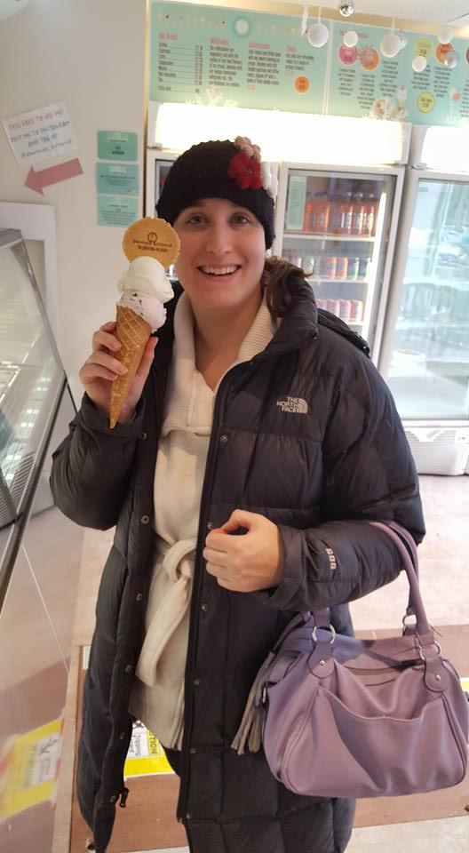

Who Am I?
 I am a college graduate. I am a daughter and a sister. I am working to be a world traveler. I enjoy food and going places to eat.I have recenty traveled to Scotland and Italy. I enjoy learning about everything. This hobby explains my interest in coding. I like to know how things are made.
Some of the things I like to do:
- Travel
- Eat
- Cook
One of the more interesting things I saw in Scotland was a Highland Cow.
Here is a quote from the Higland Cattle Society.
Highland cattle, with their long horns and flowing coats, have spread from the west of Scotland and are instantly recognisable throughout the world. Written records go back to the 18th century and the Highland Cattle Herd Book, first published in 1885, lists pedigrees since that time.